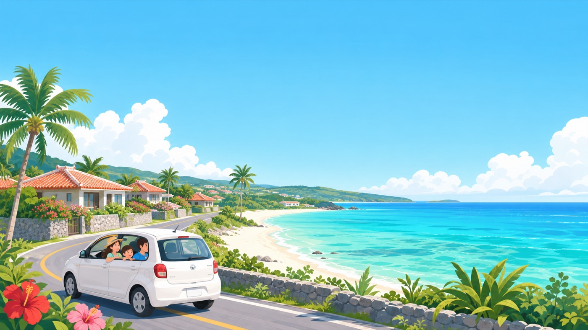
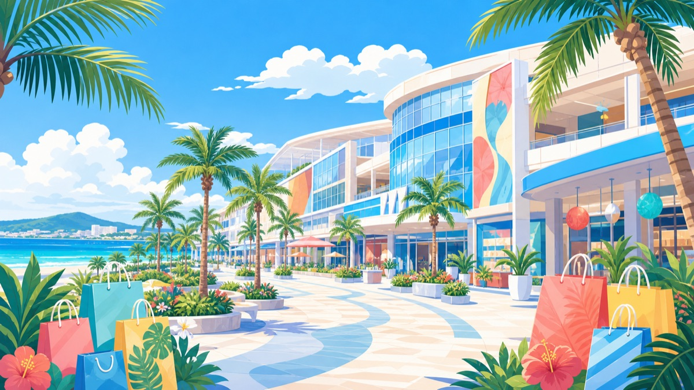

沖繩親子自駕 ・ 5天4夜
2026 / 6 / 8（一）～ 6 / 12（五）
4 大人（含孕婦）
2 小孩 ・ 3 & 6 歲
自駕 ・ KS租車
度假＋購物 ・ 不趕路
總覽
Day1
Day2
Day3
Day4
Day5
必買
注意事項
行程總覽
✈ 航班
去 6/8 桃園 10:05→那霸 12:40
回 6/12 那霸 08:30 起飛
🚗 租車
KS Rent a Car 赤嶺駅
取車＋還車同點（免異地費）
🏨 前 2 晚
ANA InterContinental 萬座
（恩納 ・ 度假）
🏨 後 2 晚
Hotel Palm Royal 國際通
（牧志）
🧭 全程節奏
Day1 一路由南往北採買＋美國村進飯店 ・ Day2 ANA 全日度假 ・ Day3 南下購物換住國際通 ・ Day4 伴手禮＋還車 ・ Day5 輕鬆回台。 唯一較長拉車在 Day1、Day3，其餘都短。
DAY 1
6/8（一）抵達＋採買＋美國村 → ANA 萬座
🚗 全程
61.7 km
⏱ 駕車約
1 小時 51 分
一路由南往北
12:40
那霸機場 → KS租車 赤嶺駅取車
📍 地圖
入境提領約 1 小時，接駁＋取車手續約 45 分，約 14:30 正式出發。
⚠ 3 歲必須兒童安全座椅、6 歲建議增高墊（日本法規），租車務必加租。
14:30
Ashibinaa Outlet ＋ iias 沖繩豐崎
📍 地圖
兩館相鄰、走路可達。Outlet 買精品，iias 補嬰幼用品＋遛娃。
買
Outlet：GUCCI／COACH 等精品折扣、ABC-MART 鞋（免稅）
買
iias 3F
西松屋
：尿布、奶粉、童裝、玩具，便宜齊全
貼
iias 好推車、有 DMM 水族館可遛小孩；停車免費。營業 10:00–21:00
16:30
MEGA Donki 宜野灣店
📍 地圖
北上順路。郊區大店好停車、比國際通便宜。
買
零食、藥妝、伴手禮、美容家電（吹風機）、玩具
貼
免稅 10%＋上網領券最高再 7%；24 小時營業
17:30
美國村（北谷 美浜）
📍 地圖
傍晚到最讚：逛街＋Sunset Beach 夕陽（6 月約 19:00）＋晚餐一次收。多數店 11:00 開；停車場多為免費，Depot Island 周邊最好停。
🛍 必逛
Depot Island
海邊開放式購物街區，服飾雜貨選物最集中
導航
American Depot
紅磚倉庫地標，美式街頭風，拍照熱點
導航
Carnival Park Mihama
50+ 店家＋電影院的商場區
導航
Sunset Beach
美國村旁夕陽名點，傍晚卡位
導航
AEON 北谷店
大型超市，補貨零食/伴手禮/嬰幼用品
導航
🍽 必吃
琉球之牛 北谷店
縣產和牛名店，常排隊，建議先訂位
導航
Seaside Cafe Hanon
海景露台、人氣鬆餅，避開正午尖峰
導航
The Calif Kitchen
頂樓無敵海景，阿古豬料理、塔可飯
導航
Taco Rice きじむなぁ
蛋包塔可飯，口味溫和適合小孩
導航
A&W ／ Blue Seal
麥根沙士續杯、沖繩限定冰淇淋
導航
20:00
抵 ANA 萬座入住
📍 地圖
代客泊車、行李直送房間，帶孩子孕婦省力。Day1 較累，但換得 Day2 全日度假。
🗺 開啟 Day1 路線導航
DAY 2
6/9（二）ANA 萬座 度假放空日
🏖 全日待在飯店
移動 ≈ 0
飯店就是行程
充分利用度假飯店，完全不排外出。孕婦休息、小孩玩水。
玩
私人沙灘＋兩座泳池、夏季海上樂園（充氣滑梯，部分 18 個月以上）
玩
縣內最大室內兒童遊樂場（雨天備案）、大浴場／桑拿
吃
自助早餐附兒童遊戲室；館內多間餐廳，不出門也能解決三餐
貼
海上活動有年齡限制，孕婦避開快艇／滑水等劇烈項目
DAY 3
6/10（三）購物爆買日 → 入住國際通
🚗 全程
49.4 km
⏱ 駕車約
1 小時 25 分
10:15
ANA 退房南下
最晚 10:30 出發，恩納→浦添約 1 小時，才趕得上 11:30 訂位。
11:15
San-A 浦添西海岸 PARCO CITY
📍 地圖
沖繩最大商場、約 250 間店，雨天也舒服。
逛
無印（沖繩最大）、LOFT、HANDS、玩具童裝、San-A 食品館（伴手禮）、海景露台
貼
室內遊戲區、哺乳室／尿布台齊全；免費停車約 4,000 台。營業 10:00–22:00
11:30
敘敘苑 PARCO CITY 店（3F）★ 已訂位
📍 地圖
高級燒肉，大面落地窗海景。午餐 CP 最高。
點
焼肉ランチ ¥3,000、焼肉重 ¥2,800、ミックス ¥4,100；壺漬牛五花、上牛舌、敘敘苑沙拉、石鍋拌飯
貼
午餐不收服務費、全席禁菸、桌席寬適合家庭；想要海景位訂位時備註
14:00
港川（離 PARCO 5 分）
📍 地圖
しまむら集團三店聚集，平價好買。
買
Birthday
：童裝、嬰幼用品、離乳食、媽媽用品（最該逛）；しまむら 平價服飾家居；Avail 潮流
貼
好推車、CP 高，比台灣便宜。營業 10:00–20:00
15:30
Yamada Denki 新都心
📍 地圖
買
美容家電（吹風機）、電鍋、相機、耳機
貼
退稅同店同日滿 ¥5,000、帶護照；大型家電 100V 注意，可宅配機場。營業 10:00–22:00
17:00
入住 Palm Royal 國際通（行李定位）
📍 地圖
Day4 整天行李都在這，輕裝出門。
🗺 開啟 Day3 路線導航

DAY 4
6/11（四）伴手禮＋還車日（輕裝）
🚗 全程
18.5 km
⏱ 駕車約
40 分
上午
泊港魚市場（泊いゆまち）
📍 地圖
海鮮早午餐，上午去最新鮮。營業 6:00–18:00。
吃
黑鮪魚現切、生魚片握壽司、海膽、甜蝦、海鮮丼，現場有烤物攤
貼
站食為主、座位少、推車不便，輪流抱小孩；不吃生食有烤物／丼飯
11:00
沖繩媳婦（曙町・伴手禮）
📍 地圖
台灣人經營、中文溝通無障礙的選物店。
買
精選沖繩零食、限定泡麵、福袋限定組合
⚠ 週四 10:30–14:30 ・
只收現金
・ 約 15:00 就拉鐵門 → 務必早點到！
中午後
瀨長島 Umikaji Terrace
📍 地圖
最晚 15:30 離開，才趕得上 17:00 前還車。
看
白色地中海建築「小希臘」、看飛機低空起降、海景夕陽
吃
幸福鬆餅（No.32 舒芙蕾）、父親的鮪魚（No.14）、氾濫漢堡
貼
階梯坡地、部分路段推車需抱抬；免費停車
16:00
先回國際通飯店（全員下車、放戰利品）
孕婦小孩先回飯店休息，不用一起去還車。
16:30
開車的人單獨去 KS租車 赤嶺駅還車
📍 地圖
還完搭計程車或單軌（赤嶺／小祿站→牧志站）回飯店。
⚠ 還車務必 17:00 前完成。Day5 完全不用碰車。
傍晚
步行逛國際通＋晚餐
📍 地圖
飯店就在國際通上，走路即可逛街、覓食、最後補貨。假日傍晚人潮多，孕婦避開尖峰；停唐吉訶德或周邊收費停車場。
🛍 必逛
唐吉訶德 國際通店
藥妝/零食/伴手禮一站購足，可退稅
導航
第一牧志公設市場
在地海鮮市場，2F 可代客料理（人多走道窄）
導航
御菓子御殿 松尾店
紅芋塔名店，伴手禮首選
導航
わしたショップ 本店
縣物產直營，食品泡盛伴手禮最齊
導航
塩屋（鹽專賣）
日本最大鹽店，雪鹽金楚糕、風味鹽
導航
平和通／市場本通
有頂棚傳統商店街，下雨也能逛
導航
🍽 必吃
通堂拉麵
濃郁豚骨「男人麵」、清爽鹽味「女人麵」
導航
牛排屋 88 國際通店
沖繩牛排老字號，石垣牛／和牛，可預約
導航
富士家 善哉剉冰
沖繩黑糖剉冰，有尿布室／停車（親子友善）
導航
Blue Seal 牧志店
沖繩代表冰淇淋，邊走邊吃
導航
沖繩そば
Q 彈麵＋豚骨柴魚湯＋滷三層肉
導航
🗺 開啟 Day4 路線導航
DAY 5
6/12（五）回台
✈ 08:30 那霸起飛
輕鬆去機場
📍 地圖
前一晚已還車，當天不用開車。
交通
計程車約 15 分；或單軌牧志站 → 那霸空港站
提醒
國際線建議 06:00–06:30 抵達機場，預留報到與安檢
必買清單
分類整理，採購集中在 Day1（Donki／iias）與 Day3（PARCO／港川／Yamada）。
🍬 伴手禮・零食
御菓子御殿 紅芋塔
雪鹽夾心餅
南風堂 雪鹽金楚糕
金楚糕 ちんすこう
鹽屋 雪鹽棉花餅
香檬洋芋片
ALFORT 沖繩限定紫薯
GODIVA 沖繩限定
沖繩黑糖
宮古島雪鹽
石垣島辣油
Orion 啤酒
👶 嬰幼兒・童裝
iias 西松屋：尿布／奶粉／童裝／玩具
港川 Birthday：童裝／離乳食／媽媽用品
しまむら：平價服飾家居
Avail：潮流配件
🔌 電器・家電
吹風機・美容家電
電鍋（注意 100V）
相機・鏡頭・耳機
Yamada 新都心
Donki 宜野灣
退稅滿 ¥5,000＋護照
🛒 採買點
Donki 宜野灣（零食藥妝）
PARCO San-A 食品館
iias / Ashibinaa
國際通・機場（最齊全）
注意事項
🚗 自駕（最重要）
兒童安全座椅
：日本法規未滿 6 歲強制。3 歲必用座椅、6 歲建議增高墊，租車要加租。
靠左行駛、右駕；雨刷與方向燈位置與台灣相反，初上路放慢。
自助加油（セルフ）、
滿油還車
保留收據；ETC 卡可一起租。
備台灣駕照 ＋
日文譯本
（非國際駕照）。停車多為計時鎖板，景點停好再付。
🔑 還車（Day4）
取／還車同在
KS Rent a Car 赤嶺駅
，免異地還車費。
務必
17:00 前
還車；先送孕婦小孩回飯店，開車的人單獨去還。
💴 付款・現金
沖繩媳婦只收現金
，且週四約 15:00 拉鐵門，請上午早點到。
多備現金；魚市場、小店常不收卡。
🤰 孕婦・親子節奏
避免長時間站立／走坡（魚市場站食、瀨長島階梯），多安排休息點。
節奏：上午一個重點 ＋ 午後休息 ＋ 傍晚再出門；帶輕量好收推車。
孕婦避開劇烈海上活動；隨身母嬰用品與電解質飲品。
🌦 6 月天氣
梅雨末段，常陰雨、午後陣雨；均溫約 28°C、濕熱，UV 高。
雨天備案：PARCO CITY、iias、DMM 水族館、ANA 室內設施。
備輕便雨衣＋折傘、防曬乳、帽子、薄外套；勤補水防中暑。
🚝 市區交通
那霸市區可搭單軌電車（Yui-Rail），避開塞車與停車，適合帶孕婦小孩短程。